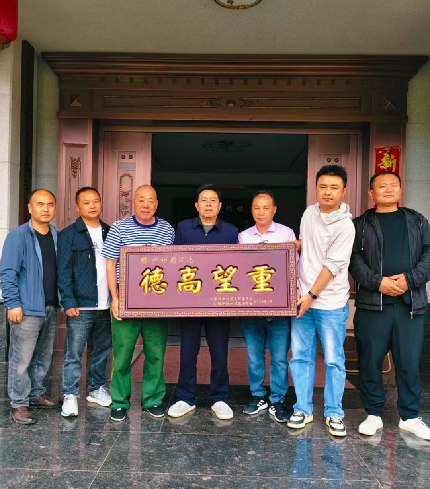

流泽镇仁家坪新村举行"德高望重"牌匾颁发仪式
——致敬老党员老书记尹初菊同志

2026年5月13日上午，流泽镇仁家坪新村洋溢着庄重而温馨的氛围。受村支两委邀请，流泽镇党委书记唐伟军，党委副书记刘春晖专程来到仁家坪新村，与村支两委班子成员及前任总支部书记赵小明一道，共同为老党员、老书记尹初菊同志颁发"德高望重"牌匾，以表彰尹初菊同志数十年如一日扎根基层、服务群众的突出贡献。
仪式上，唐伟军代表镇党委向尹初菊同志致以崇高敬意。他指出，尹初菊同志在担任村党组织书记期间，团结带领全村党员群众艰苦奋斗、开拓进取，在推动农村发展、改善民生福祉、夯实基层党建等方面倾注了大量心血，深受群众爱戴。退休后，尹初菊同志依然心系乡村发展，积极建言献策，为年轻干部传经送宝，体现了共产党员的初心本色和责任担当。"德高望重"四个字，既是对尹初菊同志过往工作的充分肯定，也是对全镇党员干部的激励和鞭策。
刘春晖在发言中表示，尹初菊同志多年来始终把群众冷暖放在心上，用实际行动诠释了一名老党员的为民情怀，是全镇党员干部学习的榜样。
前任总支部书记赵小明回忆了与尹初菊同志共事的点滴岁月。他说，老书记为人正直、办事公道、作风扎实，在村民中威望极高，为村庄发展打下了坚实基础，年轻一辈的村干部正是在老书记的言传身教中成长起来的。
面对组织的关怀和褒奖，尹初菊同志表示，这份荣誉不仅是给予个人的，更体现了党组织对基层老党员、老干部的关心和尊重。他将一如既往地关注和支持村里的发展，继续发挥余热，不辜负组织的信任和群众的厚爱。
此次"德高望重"牌匾颁发仪式，既是对一位老党员的致敬，更是一堂生动的党性教育课。它激励着广大基层党员干部传承优良作风，汲取榜样力量，在新时代乡村振兴的征程上接续奋斗、再建新功。